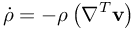
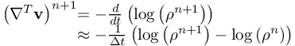
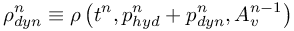
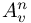
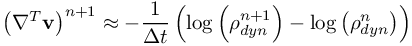
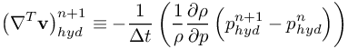
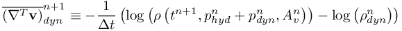
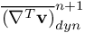

Simulate with complex geometries and complex physics
DeriveDivergenceOfVelocity
how to compute the divergence of velocity from mass conservation
The divergence of the velocity can be computed by considering the equation of mass conservation:
![\begin{array}{*{35}{l}}
\left( \nabla _{{}}^{T}\mathbf{v} \right)_{{}}^{n+1} & \approx -\frac{1}{\Delta t}\left( \log \left( \rho _{dyn}^{n+1} \right)-\log \left( \rho _{dyn}^{n} \right) \right) \\
{} & \approx -\frac{1}{\Delta t}\left( \log \left( \rho \left( t_{{}}^{n+1},p_{hyd}^{n}+p_{dyn}^{n+1},A_{v}^{n} \right) \right)+\frac{1}{\rho }\frac{\partial \rho }{\partial p}\left( p_{hyd}^{n+1}-p_{hyd}^{n} \right)-\log \left( \rho _{dyn}^{n} \right) \right) \\
{} & \approx -\frac{1}{\Delta t}\left( \log \left( \rho \left( t_{{}}^{n+1},p_{hyd}^{n}+p_{dyn}^{n+1},A_{v}^{n} \right) \right)-\log \left( \rho _{dyn}^{n} \right) \right)-\frac{1}{\Delta t}\left( \frac{1}{\rho }\frac{\partial \rho }{\partial p}\left( p_{hyd}^{n+1}-p_{hyd}^{n} \right) \right) \\
{} & \approx \left( \nabla _{{}}^{T}\mathbf{v} \right)_{dyn}^{n+1}+\left( \nabla _{{}}^{T}\mathbf{v} \right)_{hyd}^{n+1} \\
\end{array}](88932c822c02f223a24d290d2bc9bbb8.png) Thus, the definitions for hydrostatic and dynamic compression rates follow as
Thus, the definitions for hydrostatic and dynamic compression rates follow as
![\begin{array}{*{35}{l}}
\left( \nabla _{{}}^{T}\mathbf{v} \right)_{dyn}^{n+1} & \equiv -\frac{1}{\Delta t}\left( \log \left( \rho \left( t_{{}}^{n+1},p_{hyd}^{n}+p_{dyn}^{n+1},A_{v}^{n} \right) \right)-\log \left( \rho _{dyn}^{n} \right) \right) \\
{} & \text{= }-\frac{1}{\Delta t}\left( \frac{1}{\rho }\frac{\partial \rho }{\partial p}\left( p_{dyn}^{n+1}-p_{dyn}^{n} \right)+\log \left( \rho \left( t_{{}}^{n+1},p_{hyd}^{n}+p_{dyn}^{n},A_{v}^{n} \right) \right)-\log \left( \rho _{dyn}^{n} \right) \right) \\
{} & =-\frac{1}{\Delta t}\frac{1}{\rho }\frac{\partial \rho }{\partial p}\left( p_{dyn}^{n+1}-p_{dyn}^{n} \right)-\frac{1}{\Delta t}\left( \log \left( \rho \left( t_{{}}^{n+1},p_{hyd}^{n}+p_{dyn}^{n},A_{v}^{n} \right) \right)-\log \left( \rho _{dyn}^{n} \right) \right) \\
{} & =-\frac{1}{\Delta t}\frac{1}{\rho }\frac{\partial \rho }{\partial p}\left( p_{dyn}^{n+1}-p_{dyn}^{n} \right)+\overline{\left( \nabla _{{}}^{T}\mathbf{v} \right)}_{dyn}^{n+1} \\
\end{array}](71098fde45516cbcf679d1edf30202bd.png) where we have
where we have

Out of this, it follows

For numerical reasons it is preferable to define the intermediate density

That means the density as it is given after the computation of the velocity, hydrostatic and dynamic pressure, but before the computation of all additional variables .
Hence, we rewrite the formulation of the divergence of velocity by

Splitting this equation into a hydrostatic and a dynamic part yields

and

Remark: the term  represents the compression/expansion of the material that is independent of the pressure, i.e. compression due to time, reaction kinetics, temperature change etc.